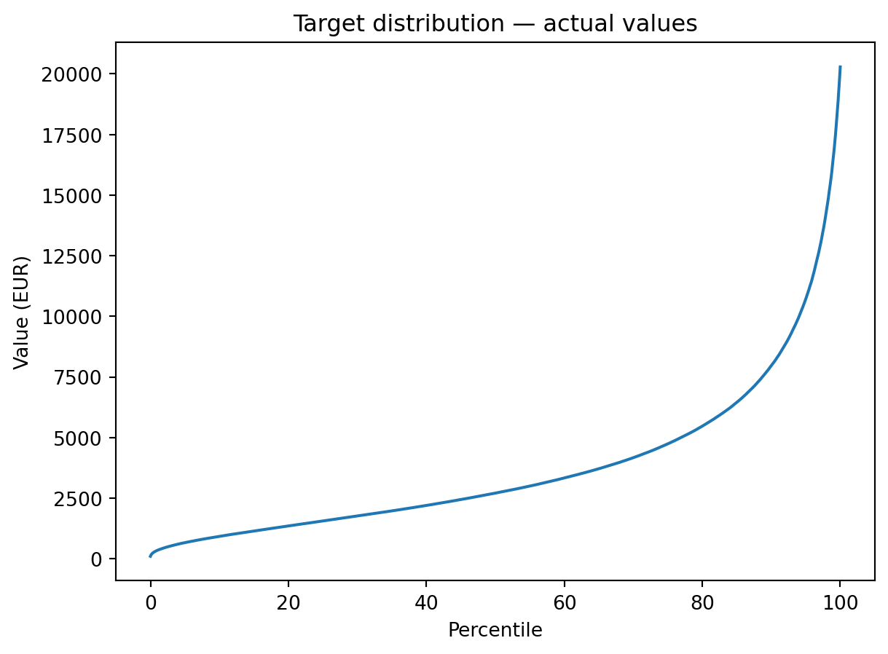
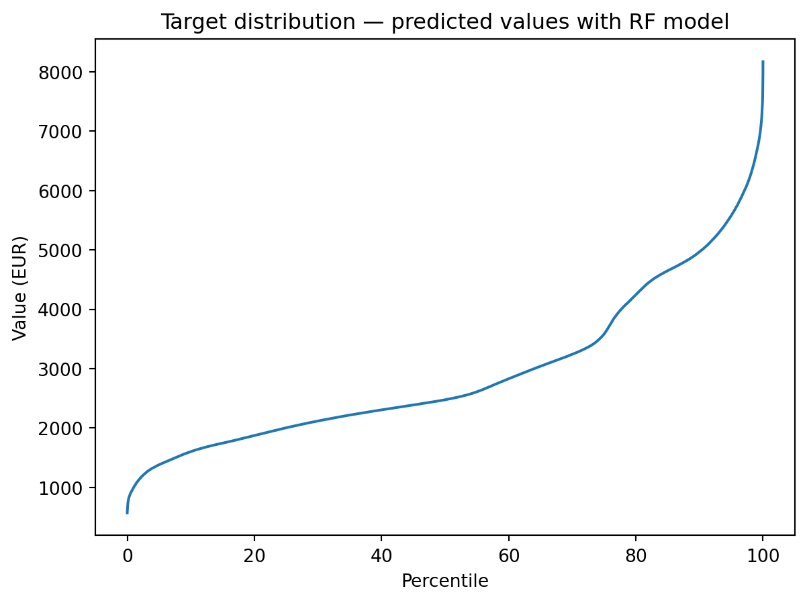
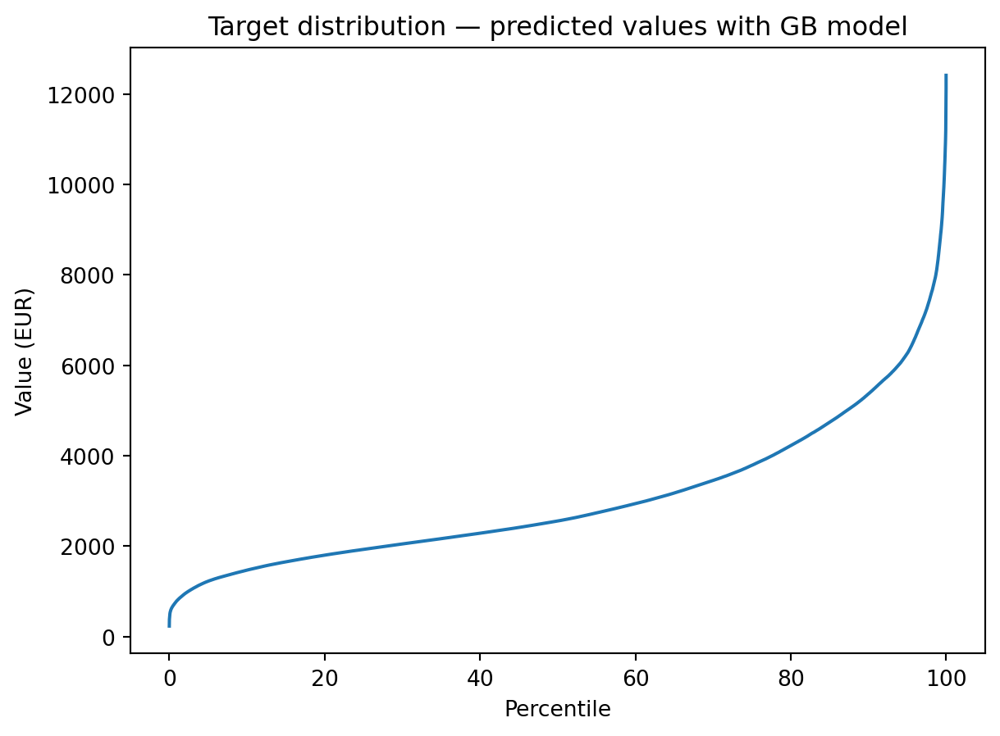
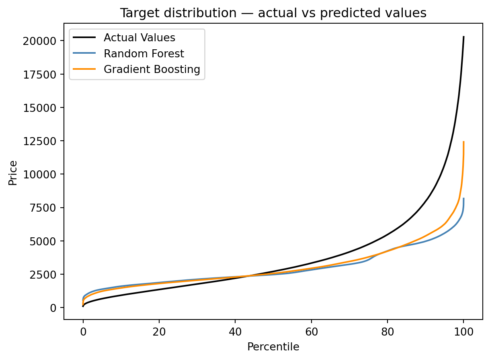

Training a model is only half the work. Before drawing any conclusions or deploying to production, you need to rigorously assess its quality: how large are the errors, are they evenly distributed, which features drive the predictions and how does the model compare to alternatives? This section covers the full evaluation process for ensemble models, applied to the Random Forest and Gradian Boosting trained in the previous exercises.
Before evaluating our trained models, you will discover some metrics and plots to measure the quality of the predictions.
You can start from the script main.py stored in the folder starting_point/.
If you want, you can also directly use the complete script of this step. It is stored in intermediate_solutions/4_metrics.py.
1 How can you evaluate the model’s inference ?
1.1 Regression metrics
Regression metrics assess the quality of a model’s predictions by comparing predicted and “observed” values. Each metric offers a different perspective depending on whether the goal is : - to penalize extreme error ; - to obtain an interpretable measure in the target’s unit ; - to quantify the share of variance explained by the model. A metric depends on what you want to do and your data. From an organisationnal point of view, it means that the “business team”, with in-depth knowledge of the field, is by far the best placed to decide which are the relevant metrics to use. Decision to use these metrics shouldn’t be the sole responsibility of the data science team.
Mean Absolute Error (MAE) : \[\text{MAE} = \frac{1}{n}\sum_{i=1}^{n}|y_i - \hat{y}_i|\] MAE gives equal weight to all deviations regardless of their magnitude and sign. In the presence of extreme values in the target (as is common in real-estate prices) and in comparison with the following metrics, MAE may be a more representative measure of typical prediction error as they are less affected by extreme errors. Moreover, MAE is easily interpretable. For example, in the prediction of price per square meter in euros, an MAE of 500 means the model’s predictions deviate from actual prices by 500 €/m² on average.
Mean Squared Error (MSE) :\[\text{MSE} = \frac{1}{n}\sum_{i=1}^{n}(y_i - \hat{y}_i)^2\] MSE is the most common evaluation metric used. Because the errors are squared, large deviations contribute disproportionately: an error of 200 weighs 4 times more than an error of 100. This makes MSE sensitive to outliers in the test set. The interpretability of this is limited, because of its units, which are the square of the target units.
Root Mean Squared Error (RMSE) : \[\text{RMSE} = \sqrt{\frac{1}{n}\sum_{i=1}^{n}(y_i - \hat{y}_i)^2}\] RMSE is simply the square root of the MSE, which restores the original unit of the target variable. RMSE is the most widely reported metric for regression and is directly comparable across models evaluated on the same test set. For example, in the prediction of price per square meter in euros, an RMSE of 500 means the model’s predictions deviate from actual prices by 500 €/m² on average — weighted towards larger errors.
The key trade-off between RMSE and MAE:
Choose RMSE when large errors are particularly costly and you want the metric to reflect this (e.g. a prediction off by 2000 €/m² is much worse than being off by 200 €/m² twice);
Choose MAE when you want a robust, interpretable measure of typical error that is less dominated by a few extreme observations.
Be careful when you can compare different models : you can compare them based on their MAE, MSE and RMSE metrics but only if the metrics are calculated on exactly the same test set.
Mean Absolute Percentage Error (MAPE) : \[\text{MAPE} = \frac{1}{n}\sum_{i=1}^{n}\left|\frac{y_i - \hat{y}_i}{y_i}\right| \times 100\] MAPE expresses errors as a percentage of the actual value, making it scale-free and immediately interpretable for non-technical stakeholders. However, MAPE is undefined when \(y_i = 0\) and is biased towards underpredictions (a 100% overestimation and a 100% underestimation are not symmetrically penalized). For real-estate prices, where the target is always strictly positive, MAPE is a natural complement to RMSE. For example, a MAPE of 12% means the model is off by 12% of the actual price on average.
Coefficient of Determination (R²) : \[R^2 = 1 - \frac{\text{SS}_\text{res}}{\text{SS}_\text{tot}} = 1 - \frac{\displaystyle\sum_{i=1}^{n}(y_i - \hat{y}_i)^2}{\displaystyle\sum_{i=1}^{n}(y_i - \bar{y})^2}\] where \(\bar{y}\) is the mean of the actual values.
R² measures the proportion of variance in the target that is explained by the model. It is scale-free:
\(R^2 = 1\): the model perfectly predicts every observation;
\(R^2 = 0\): the model explains no variance — it is equivalent to always predicting the mean;
\(R^2 < 0\): the model performs worse than the trivial mean predictor.
Unlike RMSE and MAE, R² allows comparison across different datasets and targets. Its main limitation is that it can be inflated by adding features, even irrelevant ones.
1.2 Diagnostic plots
Scalar metrics alone are insufficient: two models can share the same RMSE while exhibiting very different error patterns. Diagnostic plots reveal the structure of residuals and provide insights that numbers cannot. Moreover, they add details to see if the model performs well where you want it to perform. For example, if your aim is to have good results on the center of the distribution, you can live with worse results on extreme values (or the opposite).
Residuals distribution : it is a histogram of the residuals \(e_i = y_i - \hat{y}_i\). For a well-behaved regression model, this distribution should be:
Centered around zero: a systematic shift indicates a biased model that consistently over- or under-predicts ;
Approximately symmetric: asymmetry (skewness) suggests the model makes systematically larger errors in one direction, often due to the scale of the target variable ;
Unimodal with thin tails: heavy tails or bimodality indicate the model struggles with certain subpopulations.
For this project, the target was log-transformed before training to reduce right-skewness. The residual distribution lets you verify that this transformation was effective in stabilizing the error pattern.
QQ plot (quantile-quantile) : it compares empirical quantiles of \(y_\text{test}\) and \(\hat{y}\) by plotting them against each other. If the model’s predicted distribution perfectly matches the actual distribution, all points fall on the diagonal.
Deviations from the diagonal reveal:
Tails below the diagonal (top-right): the model underestimates high values — important for identifying whether the model correctly handles premium properties ;
Tails above the diagonal (bottom-left): the model overestimates low values ;
S-shaped curve: the predicted distribution is narrower than the actual one, which is the classical sign of regression to the mean — the model is not capturing the full variability of the target.
The QQ plot is complementary to the residuals histogram: it focuses on the overall distributional alignment rather than individual errors.
Target distribution : it is the plot of the sorted values of a series against their percentile rank, producing a cumulative distribution curve. Comparing the curves for \(y_\text{test}\) and \(\hat{y}\) side by side reveals systematic differences in location, spread, or shape:
A predicted distribution that is more compressed than the actual one confirms regression to the mean ;
A shifted curve indicates a constant bias ;
Differences in the upper percentiles are particularly informative for price prediction, where the high end of the market is often the hardest to model.
Permutation feature importance (for RF) : with scikit-learn’s permutation_importance, it measures the contribution of each feature to model performance. The principle: for each feature, the values are randomly shuffled across observations, breaking the relationship between that feature and the target and the drop in model performance (measured by the chosen metric) is recorded. This is repeated 5 times and the results are averaged for stability.
Permutation importance has several advantages over the default impurity-based importance available in tree models:
It is evaluated on held-out test data, not on training data, so it reflects generalization performance ;
It is not biased towards high-cardinality features or numerical variables ;
It is model-agnostic and directly tied to the evaluation metric.
Features with near-zero or negative permutation importance can safely be removed without hurting predictive performance. A high importance score validates that a feature carries genuine predictive signal.
2 Computing evaluation metrics
2.1 Exercice 10: Compute evaluation metrics
In this exercise, you will generate predictions from the best RF and GB model and compute all four evaluation metrics on the test set.
To be sure that you have everything already set-up properly, you can run the following code from previous section.
Code
import pandas as pd import numpy as npfrom sklearn.preprocessing import OneHotEncoder, FunctionTransformerfrom sklearn.compose import ColumnTransformer, TransformedTargetRegressorfrom sklearn.pipeline import Pipelineimport requestsfrom joblib import loadimport ioRANDOM_STATE =202605def log_transform(y):return np.log10(y)def inverse_log_transform(y):return10** yy_transformer = FunctionTransformer( func=log_transform, inverse_func=inverse_log_transform)def date_to_days(X: pd.Series, ref_date: pd.Timestamp):# converts a date to a difference to ref_date : diff_dt = pd.to_datetime(X) - ref_date# Extract days part from datetime object diff_dt = diff_dt.dt.days# Transform it from a Pandas series to a Numpy nd array, used by scikit learn for input diff_dt = diff_dt.to_numpy().reshape(-1, 1)return diff_dtdate_transformer = FunctionTransformer( date_to_days, kw_args={"ref_date": pd.Timestamp('2010-01-01 00:00')} )preprocessor = ColumnTransformer( transformers=[ ("cat", OneHotEncoder(handle_unknown="ignore"), ["prop_type", "prop_year_harm_10"]), # one-hot encoder on feature ("dat", date_transformer, "trans_date") # feature time since 01-01-2010 ], remainder="passthrough"# to keep features not transformed)X_train = pd.read_parquet("https://minio.lab.sspcloud.fr/projet-funathon/2026/project1/data/2_preprocessing/X_train.parquet")X_test = pd.read_parquet("https://minio.lab.sspcloud.fr/projet-funathon/2026/project1/data/2_preprocessing/X_test.parquet")y_train = pd.read_parquet("https://minio.lab.sspcloud.fr/projet-funathon/2026/project1/data/2_preprocessing/y_train.parquet")["price_sqm"]y_test = pd.read_parquet("https://minio.lab.sspcloud.fr/projet-funathon/2026/project1/data/2_preprocessing/y_test.parquet")["price_sqm"]# Importing fine-tuned RF and GB modelsrf_model_final = load("rf_model_final.joblib")gb_model_final = load("gb_model_final.joblib")
ImportantIf you want to fetch back final RF and GB model from S3
You can fetch back the final trained models by executing the following code. The fetched models can then be used to predict any values and evaluate it.
from joblib import loadimport osimport s3fs# Create filesystem objectS3_ENDPOINT_URL ="https://"+ os.environ["AWS_S3_ENDPOINT"]fs = s3fs.S3FileSystem(client_kwargs={'endpoint_url': S3_ENDPOINT_URL})FILE_PATH_S3 ="projet-funathon/2026/project1/models/rf_model_final.joblib"with fs.open(FILE_PATH_S3, mode="rb") as model: rf_model_final = load(model)FILE_PATH_S3 ="projet-funathon/2026/project1/models/gb_model_final.joblib"with fs.open(FILE_PATH_S3, mode="rb") as model: gb_model_final = load(model)
It will load the model, all parameters and data necessary to keep on going through the next exercices.
Generate predictions on the test set using the best RF and GB models from exercise 5 and compute their residuals.
See the solution
# best RFy_pred_RF = rf_model_final.predict(X_test)rf_residuals = y_test - y_pred_RF# best GBy_pred_GB = gb_model_final.predict(X_test)gb_residuals = y_test - y_pred_GB
Compute RMSE, MAE and R² using scikit-learn’s metrics module for the comparison of RF and GB models. Save the RMSE for both models as rmse_rf and rmse_gb.
TipHint
Import root_mean_squared_error, mean_absolute_error and r2_score from sklearn.metrics. You can see the documentation of sklearn.metricshere.
You can use the function print-metrics made in the last section on GB model.
See the solution
from sklearn.metrics import root_mean_squared_error, mean_absolute_error, r2_scoredef print_metrics(model, split, X=X_test, y=y_test):""" Print metrics for trained model """ y_pred = model.predict(X) rmse = root_mean_squared_error(y, y_pred) mae = mean_absolute_error(y, y_pred) r2 = r2_score(y, y_pred)print(f"{split} — RMSE: {rmse:.2f} | MAE: {mae:.2f} | R²: {r2:.4f}")models = [("RF", rf_model_final), ("GB", gb_model_final)]for name, model in models: print_metrics(model, name, X_test, y_test)rmse_rf = root_mean_squared_error(y_test, y_pred_RF)rmse_gb = root_mean_squared_error(y_test, y_pred_GB)
In this exercise, you will produce four diagnostic plots: a residuals distribution, a QQ-plot comparing actual and predicted quantiles, the target distribution and a feature importance plot. For each plot, take a moment to interpret what you observe.
Write a residuals_distribution(residuals, rmse) function to plot the histogram of the residuals. It takes residuals (a pandas Series) and rmse (a float), along with ax, label and color parameters for overlay plotting.
TipHint
Use matplotlib.pyplot module to plot the distribution. You can read the documentation here.
Plot the residuals distribution of the RF and GB models. Look at whether the histogram is centered around zero and whether it is approximately symmetric.
TipHint
Pass the residuals series and the RMSE value computed in Exercise 8. The RMSE value is needed in the plot title. Call plt.show() to display the figure.
Write a QQplot(y_test, y_pred) function which computes 1000 quantile points for both series and plots them against each other. The parameters are y_test, y_pred, pandas series of observed and predicted target and the same parameters that question 1. for overlay plotting. The function should return the plot.
Plot the QQ plot comparing the quantiles of the actual and predicted distributions for RF and GB models. Check whether the points align closely along the diagonal, especially in the tails.
TipHint
Points well above the diagonal in the upper tail indicate that the model underestimates high prices.
Plot and compare the target distributions for the actual test values and the predicted values side by side.
TipHint
Call it twice — once for y_test and once for y_pred. Display both figures. Compare the shapes: a compressed predicted distribution indicates regression to the mean, while a systematic vertical shift indicates a constant bias.
See the solution
fig_actual = target_distribution(y_test)plt.title("Target distribution — actual values")plt.show()fig_pred = target_distribution(y_pred_RF)plt.title("Target distribution — predicted values with RF model")plt.show()fig_pred = target_distribution(y_pred_GB)plt.title("Target distribution — predicted values with GB model")plt.show()



Tip
If you want to plot both plots on a single figure, you can adapt the function :
def plot_combined_distribution(y_test: pd.Series, y_pred: pd.Series, ax=None, label=None, color=None, show_actual=True):""" Plots the target distributions of actual and predicted values on the same graph. """if ax isNone: fig, ax = plt.subplots()if show_actual: y_sorted_actual = np.sort(y_test) axe_actual = np.linspace(0, 100, len(y_sorted_actual)) ax.plot(axe_actual, y_sorted_actual, label="Actual Values", color="black") y_sorted_pred = np.sort(y_pred) axe_pred = np.linspace(0, 100, len(y_sorted_pred)) ax.plot(axe_pred, y_sorted_pred, label=label or"Predicted Values", color=color) ax.set_xlabel("Percentile") ax.set_ylabel("Price") ax.set_title("Target distribution — actual vs predicted values") ax.legend()return axfig, ax = plt.subplots()plot_combined_distribution(y_test, y_pred_RF, ax=ax, label="Random Forest", color="steelblue", show_actual=True)plot_combined_distribution(y_test, y_pred_GB, ax=ax, label="Gradient Boosting", color="darkorange", show_actual=False)plt.show()

(Only for RF model) Write a calculate_importance(X_test, y_test, RANDOM_STATE, rf_model_final, SCORING) function, which returns a sorted Series of importance scores with features name as index. The parameters are the test set (X_test and y_test), the RF model rf_model_final trained in last section and the scoring chosen for the impurity reduction.
Note that permutation importance is computationally expensive on a large test set. The calculate_importance() function automatically subsamples up to 100,000 observations before computing importance scores. This subsample does not change the result.
TipHint
Use permutation_importance function from scikit-learn. See here for the documentation.
Congrats 🎉! In this section, you have a complete evaluation pipeline:
scalar metrics,
residual diagnostics,
distributional analysis,
feature importance,
and a head-to-head model comparison.
These steps form the foundations of any rigorous model validation workflow, well done ! You can now have a look at how to log a model to avoid being lost between different models and having to train again a model.